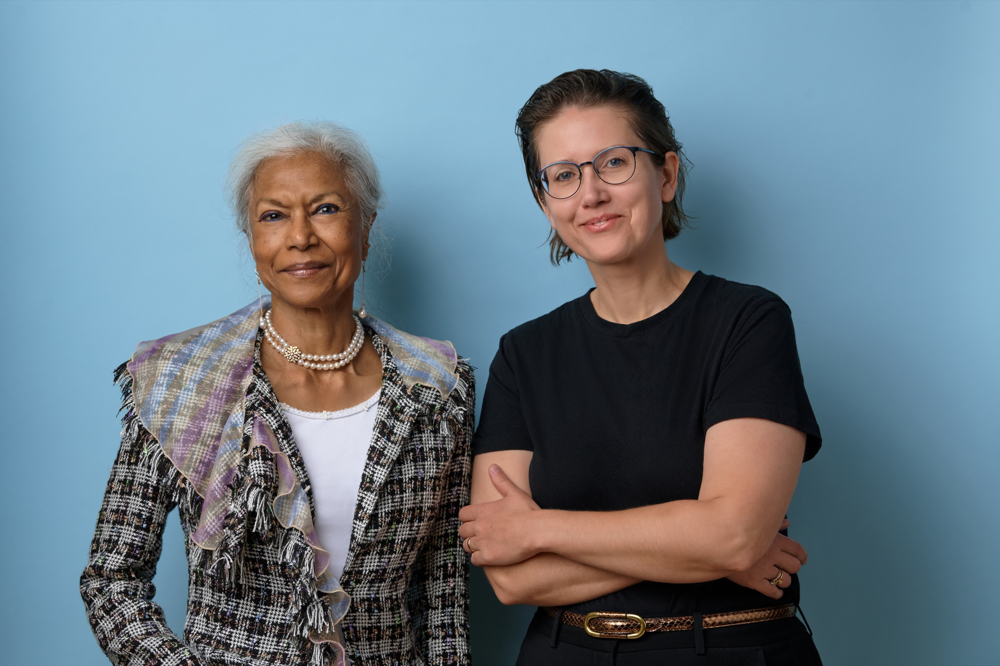
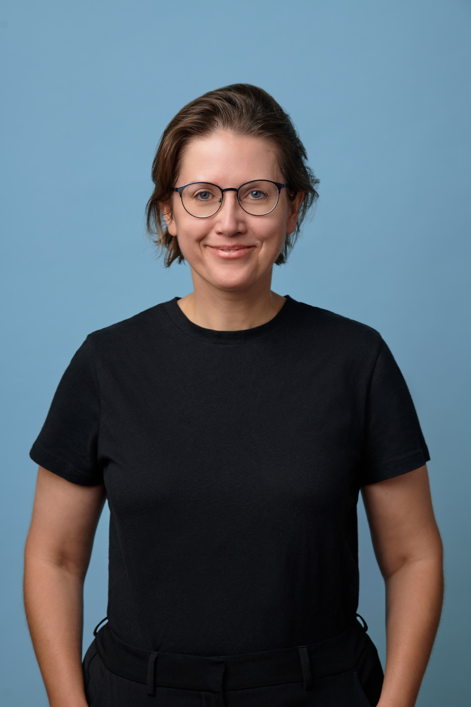

Women-specific conditions
May Health
Developing technology to restore ovulation in women with PCOS.
Sofinnova, Bpifrance, Trill ImpactView ↗
Now Raising Fund II
We back early-stage healthcare businesses addressing unmet needs in women’s health — with attention to the science, the people and the path to market.
Specialist focus · Clinical rigor · Cross-border access

The opportunity
Women’s health has traditionally been viewed as an investment category centered on reproductive health and wellness.
Kidron applies scientific and commercial discipline across a broader healthcare spectrum, from medical devices, diagnostics and therapeutics to care delivery and consumer health. We invest in conditions unique to women, those that affect women differently, and those that disproportionately affect women.
Selected investments
Our portfolio reflects three investment lenses: conditions unique to women, markets serving predominantly women, and healthcare solutions with a distinct rationale for female patients.
Women-specific conditions
Developing technology to restore ovulation in women with PCOS.
Women-specific conditions
Developing a self-retaining surgical retractor designed for C-sections.
Women-specific conditions
Developing LIONESS™, a device designed to help prevent preterm birth by supporting the cervix.
Women-predominant markets
Beyond Medicine focuses on skin longevity and mitochondrial health. Its flagship brand, RebelCell, applies mitochondrial science to skincare designed to support recovery after aesthetic procedures.
Differentiated care for women
FDA-cleared
A novel chemotherapy port designed with female patients in mind, combining simplified placement with attention to their aesthetic concerns.
Differentiated care for women
RenalGuard is designed to reduce acute kidney injury around cardiac procedures, with a randomized cardiac-surgery study demonstrating lower AKI rates. Sex-related differences in kidney risk and its assessment make female patients an important part of Kidron’s investment rationale.
Selected co-investors
Our distinction
We invest in the best businesses — grounded in science, built by teams we know, and supported by a clear commercial plan.
We invest early, after taking the time to understand the science and get to know the people behind the business.
We require board representation for every investment. In our experience, this depth of preparation helps build the foundation for future funding and the company’s ultimate success.
Our foundation
We evaluate the clinical need, underlying biology, evidence and regulatory pathway.
Our relationships
We get to know the founders, leadership team, board and co-investors closely, including how they work together.
Our investment discipline
We examine how capital needs connect to development milestones, how each milestone will be reached, who will pay for the product, reimbursement and potential acquirers.
How we invest
Early-stage healthcare companies across the US, Europe and Israel.
01
Conditions unique to women, diseases that affect women differently, and health needs that disproportionately affect women.
02
Medical devices, diagnostics, therapeutics, digital health, healthcare services and consumer health.
03
Sourcing opportunities across these healthcare markets through the partners’ networks.
Leadership
Anula and Maria bring complementary experience to women’s health investing.
United States · Silicon Valley, Boston
MD, PhD, MPhil, MBA · Founding Managing Partner
Anula brings a physician’s understanding of science to venture investing. Her experience includes a former VP role at Roche Pharmaceuticals and founding managing partner roles at EXXclaim Capital and Evolvence India Life Science Fund I and II.
She led investments including nVision Medical, acquired by Boston Scientific. She also co-founded Artemis Women’s Health Foundation and serves as Vice Chair of WHAM.
Board: Jaguar Health NASDAQ, Lineage Cell Therapeutics, Aarvik, Solera Bio, Nua Surgical.

Israel & Europe · Tel Aviv
LLM · Founding Managing Partner
Maria has been active in venture capital since 2011. Her experience across Europe and Israel spans fund formation, investment negotiations, healthcare asset acquisitions and public market transactions.
At Kidron, her work spans portfolio construction, capital strategy and investor relations.
Board: Beyond Medicine Inc., CardioRenal Systems Inc. Observer: Portal Access.
Contact
Interested in our investment approach, building a company, or exploring a collaboration? Get in touch with the Kidron team.
Investing in the business of women's health
Important notice: This website is provided for informational purposes only and does not constitute investment advice, an offer to sell, or a solicitation of an offer to buy any securities. Any offering of fund interests will be made only to qualified/eligible investors by means of confidential offering documents and in accordance with applicable law. The information herein is believed to be reliable but is not guaranteed and should not be relied upon as a promise or representation of future performance. Past performance is not indicative of future results.